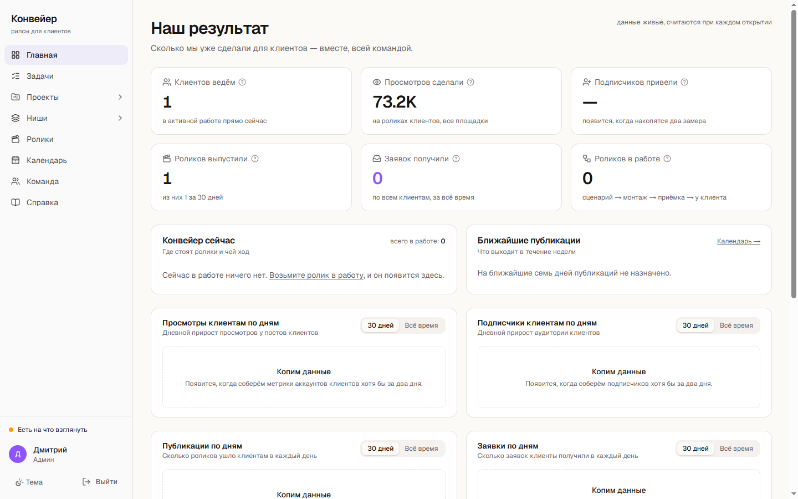

Делаем автоматизацию, которая не молчит, когда ломается
Python-конвейеры для документов, Telegram-боты с ИИ, веб-системы и ИИ-ролики. Работаем под вашим брендом, с вашим клиентом напрямую не общаемся. Каждая система, которую мы сдаём, сама сообщает, если данных не хватило или процесс встал.
комплект: DEMO-001
--- 1. Извлечение текста
tz.docx -> текст извлечён
--- 2. Контроль полнотыНЕ ПРОЧИТАНО: smeta.pdf — PDF без текстового слоя (скан)КРАСНЫЙ: решение принимать нельзя, комплект неполный--- 4. Сторож конвейера
до прогона: КРАСНЫЙ — прогона не было 53.6 ч
после прогона: ЗЕЛЁНЫЙ — обработано документов: 1
Сейчас горит красный: смета пришла сканом, и система отказалась выносить вердикт по неполному комплекту.
469комплектов документов разобрано в продакшене
~150модулей на Python в рабочей системе
2 дняот пустой папки до прода веб-системы
24/7боты и очереди живут без нашего компьютера
Что берём в работу
Пять направлений, в каждом есть работающая система
Мы не берём задачи, которых ни разу не делали. Всё, что ниже, уже работает у нас в продакшене, поэтому срок и цену называем до начала работы.
PDF · DOCX · XLSX · DOC
Разбор документов в таблицу или учётную систему
Вынимаем нужные поля из пачки документов, включая таблицы, объединённые ячейки, колонтитулы и сноски. Отдаём вместе со списком того, что прочитать не удалось, и причиной по каждому файлу.
от 25 000 ₽3–7 дней
сбор · фильтр · сводка
Мониторинг сайтов и порталов с отчётом в Telegram
Ежедневный сбор по правилам заказчика и сводка в Telegram. Сторож отличает «сегодня ничего нет» от «сбор сломался», поэтому тишина не выдаёт себя за порядок.
от 20 000 ₽ + сопровождение5–10 дней
Telegram · LLM
Telegram-боты с ИИ-агентом
Бот отвечает с учётом прошлой переписки, ставит задачи, присылает отчёты и файлы. Живёт на сервере как служба, а не на чьём-то ноутбуке.
от 25 000 ₽от 5 дней
Next.js · Supabase
Веб-системы и внутренние кабинеты
Кабинеты с ролями, стадии задач, очередь фоновых заданий, графики и уведомления. Первую рабочую версию показываем быстро, потом доводим.
по задачеMVP от 2 дней
вертикальное видео · ИИ-аватар
ИИ-ролики для клиентов агентства
Сценарий по ролику, который уже набрал просмотры, озвучка, аватар, монтаж и субтитры. Первый ролик на вашего клиента делаем бесплатно.
цена под объём3 рабочих дня
Кейсы
Что уже работает и какие поломки мы в нём закрыли
Цифры взяты из рабочих систем. Данные заказчиков в описаниях обезличены, код первой системы открыт.
Конвейер разбора документов, который не выносит вердикт по половине комплекта
Раньше на один комплект уходили часы: прочитать задание, смету и проект договора, вынуть требования, посчитать экономику. Ошибка стоила денег, если контракт нельзя сдать за предложенную цену. Теперь система сама забирает документы по расписанию, разбирает все форматы своими парсерами, считает экономику и присылает в Telegram вердикт с обоснованием.
сборпо расписанию
извлечениесвои парсеры из XML
контроль полнотыстоп, если не всё прочитано
экономикатребования и цена
вердиктв Telegram
журналпрогноз и факт
469комплектов разобрано
455объектов в базе
3состояния сторожа вместо двух
1 мес.от первого скрипта до работы по cron
Что поймали на живых документах
Как закрыли
Стандартная конвертация отдала 712 символов вместо 30 262: всё задание было набрано таблицей
DOCX и XLSX читаются своим кодом прямо из XML, вместе с объединёнными ячейками, колонтитулами и сносками
Задание на 35 страниц пришло сканом, извлечение дало 48 байт, и документ получил вывод «требований нет»
Контроль полноты считает непрочитанное с причиной по каждому файлу. Пока список не пуст, решение не принимается
Ежедневный сбор пять суток стоял, хотя расписание отрабатывало и логи писались
Сторож с тремя состояниями. Метку свежести пишет только успешно завершённый проход, а не любое касание базы
Вывод сделали по тексту задания, а норматив, на который оно ссылалось, к тому времени заменили
Правило: если документ ссылается на норматив, норматив открывается и читается целиком
Веб-система ведения клиентов: от пустой папки до прода за два дня
Кабинеты с ролями: у администратора одно рабочее место, у исполнителя другое. Ролик проходит пять стадий от сценария до публикации у клиента, по каждому переходу приходит уведомление в Telegram. Фоновые воркеры разбирают очередь заданий: снимают метрики с ролика по ссылке, предлагают вторую версию сценария, делают озвучку и пишут описания для трёх площадок. Очередь разбирается в облаке, поэтому система работает без включённого компьютера.

Главная «Наш результат». Данные живые и пересчитываются при каждом открытии. Где их пока мало, система пишет «копим данные» и не рисует пустой график.
2 днядо первой версии в проде
12таблиц в базе, миграции
5стадий задачи с уведомлениями
390 pxработает с телефона
Отдельный модуль собирает чужие ролики в нише клиента, считает, во сколько раз ролик обогнал обычный уровень автора, и отсеивает то, что не по теме. Из 68 залетевших роликов 60 разобраны моделью: 42 по теме, 18 мимо. Ещё 8 роликов без речи и подписи система честно пометила «смотреть глазами» и не стала сочинять описание.
Telegram-бот с ИИ-агентом, которому не нужен оператор
Бот и агент живут на сервере как две службы. На каждое входящее поднимается агент: читает последние 40 реплик и память по переписке, затем готовит ответ или задачу. Компьютер владельца для этого не нужен.
Поломка
Решение
Telegram отдаёт очередь входящих только одному читателю. Второй скрипт «проверить новые» уводил сообщение себе, и основной бот его не видел
Читатель один, на сервере. Остальные скрипты умеют только отправлять
Рабочие и личные сообщения шли через одного бота
Два бота с разными получателями: рабочее отдельно от личного
Сборка вертикальных роликов кодом
Кадры рисуются в браузере и склеиваются через ffmpeg, добавляется озвучка и субтитры по два-три слова. Время для субтитров берём из распознавания речи, а сами слова из утверждённого текста, поэтому ошибок распознавания в подписях нет. Сценарий строим по структуре ролика, который уже набрал просмотры, и каждую фразу превращаем в отдельный кадр.
донорролик с просмотрами
сценарийутверждение
озвучкаи аватар
кадрырендер в браузере
субтитрытайминг из Whisper
Генерация аватара и озвучки запускается только после того, как утверждены донор и текст. Так платные кредиты не уходят на черновики.
Как идёт работа
От задачи до сдачи
Код пишется в паре с ИИ, проверяется и доводится нами на реальных данных. Главное в этой работе — отличить результат, который работает, от результата, который только выглядит правдоподобно.
шаг 1
Разбор задачи
Вы присылаете задачу и пример данных. В тот же день называем срок и фиксированную цену.
шаг 2
Проба на ваших данных
Для разбора документов берём 10–20 ваших файлов и показываем результат вместе с отчётом о пропусках.
шаг 3
Сборка и проверка
Каждый модуль проверяем на живых данных, а не на удобном примере. Найденные поломки фиксируем в коде.
шаг 4
Сдача
Передаём код, инструкцию запуска и сторожа, который сообщит, если что-то встало.
шаг 5
Сопровождение
По желанию берём систему на поддержку с оплатой по месяцам.
Информационная безопасность
Что мы делаем с доступами и данными ваших клиентов
Ниже то, что уже настроено в наших собственных системах. Те же правила применяем в проектах для заказчиков.
Секреты отдельно от кода
Токены и ключи лежат в отдельном хранилище вне репозиториев и не попадают в git
В облаке ключи хранятся в GitHub Secrets и переменных окружения хостинга
ИИ-агенту запрещено читать файлы с секретами: запрет стоит на уровне инструмента, а не на честном слове
Логи чистятся от токенов, режимы отладки, которые печатают секреты, не включаются
Серверы
Вход только по SSH-ключу, вход по паролю отключён
SSH на нестандартном порту, стандартный порт закрыт файрволом
fail2ban блокирует адреса, которые подбирают доступ
Отдельные ключи для каждого устройства, с которого идёт работа
Базы и доступ людей
Row Level Security включён на таблицах: без входа база не отдаёт ни строки
Роли в интерфейсе: исполнитель видит только своё рабочее место
Пароль новому участнику показывается один раз, при входе
Доступ выдаётся и отзывается по одному человеку
Данные клиентов агентства
Репозитории с данными клиентов приватные, в публичный код и портфолио попадает только обезличенное
Рабочие и личные каналы связи разведены: отдельные боты и отдельные аккаунты
С вашим клиентом напрямую не контактируем и не используем его материалы в своих кейсах
Подписываем NDA по вашей форме
Если в задаче есть персональные данные, до старта согласуем, где они будут храниться и обрабатываться, включая размещение на российском хостинге по требованиям 152-ФЗ.
Условия
Как мы работаем с агентствами
Под вашим брендомРезультат уходит клиенту от вас, наше имя нигде не появляется
Договор с ИПАкты и закрывающие документы, УСН без НДС
Фиксированная ценаНазываем до начала. Оплата половина вперёд, половина по сдаче
Часовой поясНовосибирск, МСК+4. Работаем и по московскому времени
Бесплатная пробаОдин ролик на вашего клиента или разбор 10–20 ваших документов
Ответ в тот же деньНа присланную задачу называем срок и цену в день обращения
Контакты
Пришлите одну задачу, которая сейчас лежит без исполнителя
Документы, которые надо разобрать, клиент, которому нужны ролики, или бот, до которого не доходят руки. Посмотрим и в тот же день назовём срок и цену. Ни к чему не обязывает.